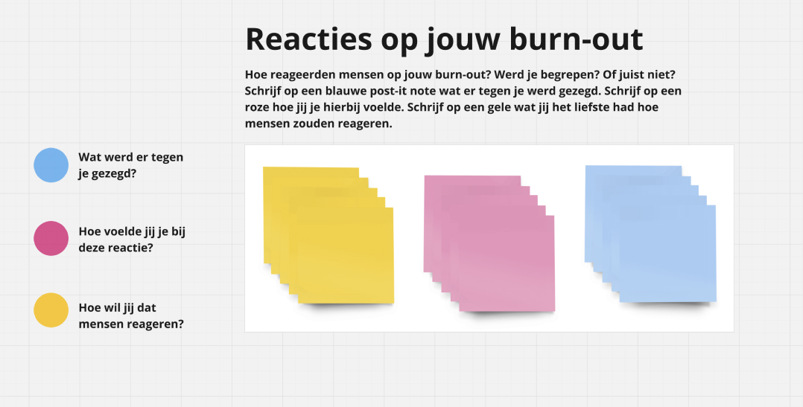

ONDERZOEK - POST IT MAPPING - METHODE
Om meer te weten te komen over welke reacties studenten met een burn-out krijgen, heb ik gekozen voor de onderzoeksmethode ‘post-it mapping’. Hieruit heb ik veel informatie gekregen over wat de reacties die studenten krijgen over hun burn-out voor impact hebben op hoe ze zich voelen.
ONDERZOEK - POST-IT MAPPING - RESULTATEN
“Zet nog even door, dan wordt het vanzelf minder erg”
“Ik voelde me verdrietig en bekneld in de situatie alsof er geen uitweg is waardoor ik nog meer stress
kreeg.”
“Nou ik heb ook iets vergelijkbaars meegemaakt en dat was helemaal niet stressvol!”
“Hoe kan iemand van jou leeftijd een burn-out hebben? Je hebt nog niets meegemaakt in je
leven”
“In mijn tijd bestond burn-out niet hoor, je werkte gewoon hard en je hield je mond erover”
“Alsof de wereld van toen er hetzelfde uit ziet als nu. Het is niet alsof vroeger alles beter was.”
“Ze begrijpen niet waar wij allemaal mee zitten en denken alleen maar dat we lui zijn en ons
aanstellen.”
“Het is gewoon stress, gaat wel weer voorbij”
“Nou volgens mij moet jij gewoon even een goede planning maken, dan heb je weer een beetje
overzicht.
“Ze snapt echt totaal niet wat er allemaal in me omgaat en hoe erg ik hiermee struggle”
“Ik voel me niet serieus genomen en alsof er niet naar me geluisterd wordt.”
“Het voelde alsof ik me aanstelde en daardoor werd mijn stress ook erger omdat ik me zwak voelde.
Ergens wist ik wel dat zij niet alle informatie hadden om te kunnen oordelen maar daar kon ik toen
niet over nadenken.”
Wat er wordt gezegd
Hoe studenten zich hierbij voelen

Conclusie: Mensen zonder burn-out lijken niet te begrijpen wat studenten voelen en doormaken en zeggen daarom best schadelijke dingen die studenten alles behalve helpen. Het is dus van belang dat er meer bewustwording ontstaat hierover. Men moet meer empathie tonen aan studenten en hun struggles want anders beschadigd het studenten met een burn-out nog meer. Dit is een belangrijke conclusie die ik mee wil nemen naar de volgende fase van mijn project.
Er zijn hier twee dingen belangrijk: 1: meer bewustwording creëren over burn-out bij studenten en 2: studenten met een burn-out die moeilijk voor zichzelf op kunnen komen een stem geven zodat ze minder snel over zich heen laten lopen met negatieve opmerkingen. Dit zijn twee uitgangspunten waar ik vanuit wil werken in de ontwerpfase.